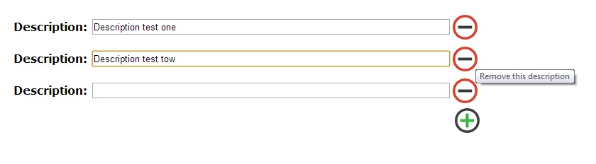

Introdução
Este exemplo mostra como adicionar e remover controles de formulário dinamicamente em uma página Asp.Net WebForms, preservando o estado destes controles e segundo a vontade e necessidade do usuário final.
O código aborda os seguintes tópicos:
- Utilização do controle Repeater
- Utilização do evento ItemCommand
- Geração de controles de quantidade variável
- Demonstração do comportamento e ciclo de vida de páginas Asp.Net WebForms (Page_Load, PostBack, dentre outros)
- Resgate de valor de controles existentes dentro de um controle Repeater
Exemplo
Para confecção deste exemplo foram utilizados os itens abaixo e os seguintes passos:
- Criação de um formulário chamado Default.aspx
- Utilização de um controle Repeater na página, cujo Template possue um campo texto e um botão de remoção de itens, juntamente com a legenda do campo à esquerda.
- Configuração do evento ItemCommand associado ao Repeater
- Criação de um botão para adicionar novas descrições
- Criação do método OnClick do botão para adicionar novos itens.
Descrição
Para testar o exemplo, após baixar os arquivos do projeto e executá-lo, na única página constante no projeto, adicione novos campos no formulário com o botão verde e remova itens com o botão vermelho.

Acredito eu que essa seja uma das formas existentes para permitir ao usuário adicionar e remover valores em múltiplos controles, sem uma quantidade pré-definida.
Arquivos
- Default.aspx - formulário com o código html, css e os controles de servidor.
- Default.cs - arquivo C# que contém a classe associada à página, com suas propriedades e eventos.
- Pasta images - contém as imagens do projeto
- Web.config - contém as configurações do projeto
Mais informações
Bom pessoal, este é um exemplo simples, mas espero que ajude mais gente que já precisou fazer algo semelhante, principalmente a aqueles que estão iniciando sua jornada no desenvolvimento Web.
Abraço a todos.